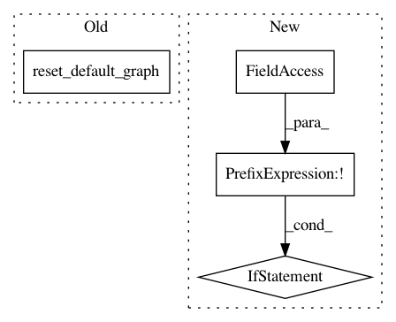

e06fa429553cd8a183f4fe57ea07e311b4f6ef4e,tests/classifiers/test_tensorflow.py,TestTensorFlowClassifier,test_fit_generator,#TestTensorFlowClassifier#,81
Before Change
logger.info("Accuracy after fitting TF classifier with generator: %.2f%%", (accuracy * 100))
self.assertEqual(accuracy, 0.65)
tf.reset_default_graph()
sess.close()
def test_nb_classes(self):
classifier, sess = get_classifier_tf()
After Change
self.assertAlmostEqual(y_predicted[0, i], y_expected[0][i], places=4)
def test_fit_generator(self):
if not self.is_version_2:
classifier, sess = get_classifier_tf()
// Create TensorFlow data generator
x_tensor = tf.convert_to_tensor(self.x_train.reshape(10, 100, 28, 28, 1))
y_tensor = tf.convert_to_tensor(self.y_train.reshape(10, 100, 10))
dataset = tf.data.Dataset.from_tensor_slices((x_tensor, y_tensor))
iterator = dataset.make_initializable_iterator()
data_gen = TFDataGenerator(sess=sess, iterator=iterator, iterator_type="initializable", iterator_arg={},
size=1000, batch_size=100)
// Test fit and predict
classifier.fit_generator(data_gen, nb_epochs=2)
predictions = classifier.predict(self.x_test)
predictions_class = np.argmax(predictions, axis=1)
true_class = np.argmax(self.y_test, axis=1)
accuracy = np.sum(predictions_class == true_class) / len(true_class)
logger.info("Accuracy after fitting TensorFlow classifier with generator: %.2f%%", (accuracy * 100))
self.assertEqual(accuracy, 0.65)
def test_nb_classes(self):
self.assertEqual(self.classifier.nb_classes(), 10)
def test_input_shape(self):
In pattern: SUPERPATTERN
Frequency: 3
Non-data size: 4
Instances
Project Name: IBM/adversarial-robustness-toolbox
Commit Name: e06fa429553cd8a183f4fe57ea07e311b4f6ef4e
Time: 2020-01-15
Author: beat.buesser@ie.ibm.com
File Name: tests/classifiers/test_tensorflow.py
Class Name: TestTensorFlowClassifier
Method Name: test_fit_generator
Project Name: IBM/adversarial-robustness-toolbox
Commit Name: e06fa429553cd8a183f4fe57ea07e311b4f6ef4e
Time: 2020-01-15
Author: beat.buesser@ie.ibm.com
File Name: tests/classifiers/test_tensorflow.py
Class Name: TestTensorFlowClassifier
Method Name: test_layers
Project Name: IBM/adversarial-robustness-toolbox
Commit Name: e06fa429553cd8a183f4fe57ea07e311b4f6ef4e
Time: 2020-01-15
Author: beat.buesser@ie.ibm.com
File Name: tests/classifiers/test_tensorflow.py
Class Name: TestTensorFlowClassifier
Method Name: test_set_learning